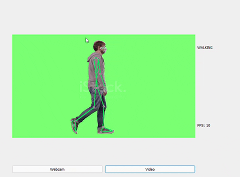

Giới thiệu tổng quan
Bài toán của chúng ta xây dựng đó là bài toán nhận dạng các hành động con người qua webcam hoặc video. Các hành động con người thì rất nhiều vì vậy trong bài viết này mình chỉ nhận dạng một vài hành động thường ngày qua con người. Phạm vi hành động nhóm sẽ xây dựng đó là: Đi, Đứng, Ngã, Vỗ tay, Chạy. Thuật toán được sử dụng trong bài này đó là công cụ MediaPipe và mạng LSTM. Đầu vào của bài toán đó là video và đầu ra là phân loại hành động đó. Việc thu thập dữ liệu về đề tài này rất khó khăn, tốt nhất các bạn vào trang này istockphoto để crawl dữ liệu về
Giới thiệu thuật toán
1. Công cụ MediaPipe
Đây là một công cụ do google thiết kế ra, nó cung cấp nhiều tính năng cho các bài toán AI/ML chạy trên nhiều nền tảng khác nhau
MediaPipe là tập hợp của một loạt các giải pháp Machine Learning đa nền tảng, có thể can thiệp được và cực kỳ lightweight.
Một số ưu điểm có thể kể tới của giải pháp này bao gồm:
- Cung cấp một giải pháp inference nhanh chóng: Google khẳng định rằng bộ công cụ này có thể chạy ổn định trên hầu hết các cấu hình phần cứng thông dụng.
- Mã nguồn mở và miễn phí: Toàn bộ source code được công khai trên MediaPipe, người dùng hoàn toàn có thể sử dụng và tùy chỉnh trực tiếp để phù hợp với bài toán của mình.
- Dễ dàng cài đặt và triển khai: Việc cài đặt cực kỳ dễ dàng và tiện lợi, có thể triển khai trên nhiều nền tảng khác nhau như Mobile (Android/iOS), Desktop/Cloud, Web và IoT devices.
Hầu hết các bài toán nổi bật trong lĩnh vực Computer Vision - Thị giác máy tính, đều được Google cài đặt trong MediaPipe. Trong bài toán mình sẽ sử dụng Human Pose Estimation
Mở rộng từ bài toán Hands Detection, Human Pose Estimation cung cấp một mô hình skeleton 3D cho cả cơ thể, với các khớp quan trọng được định nghĩa sẵn và được nối với nhau để tạo thành khung của người. Chiến thuật được đặt ra cho bài toán này tương tự như bài Hands Detection và Face Mesh. BlazeFace, một lần nữa, được sử dụng làm tư tưởng chính cho thuật toán xử lý bài này.
2. Mạng LSTM
Mạng LSTM là mạng cải tiến từ mạng RNN, cơ bản bạn có thể hiểu nó là mang thông tin từ layer trước đến các layer sau, nhờ như vậy nó giải quyết về các bài toán chuỗi(sequence) rất tốt. Trong bài toán này, đầu vào chúng ta là video thì đó là các chuỗi ảnh nối liền nhau.
Bài toán: Nhận diện hành động trong video. Đây là dạng bài toán many to one trong RNN, tức nhiều input và 1 output.
*Input ta sẽ tách video thành n ảnh (mỗi giây một ảnh). Các ảnh sẽ được cho qua pretrained model CNN để lấy ra các feature (feature extraction) vector có kích thước n*1
*Output là vector có kích thước d*1 (d là số lượng hành động cần phân loại), softmax function được sử dụng như trong bài phân loại ảnh
Trong mạng LSTM có 3 cổng:
Forget gate:
- Giả sử chúng ta đọc các từ trong một đoạn văn bản tiếng anh và dự định sử dụng LSTM để theo dõi các cấu trúc ngữ pháp, chẳng hạn như chủ ngữ là số ít ("puppy") hay số nhiều ("puppies").
- Nếu chủ ngữ thay đổi trạng thái (từ số ít sang từ số nhiều), trí nhớ về trạng thái trước đó trở nên lỗi thời, vì vậy chúng ta “forget” đi trạng thái lỗi thời đó.
- Forget gate là 1 tensor chứa các giá trị nằm trong khoảng từ 0 đến 1. Nếu một đơn vị trong forget gate có giá trị gần bằng 0, LSTM sẽ "forget" trạng thái được lưu trữ trong đơn vị tương ứng của trạng thái ô trước đó. Nếu một đơn vị trong forget gate có giá trị gần bằng 1, LSTM chủ yếu sẽ ghi nhớ giá trị tương ứng trong trạng thái được lưu trữ.
Candidate value:
- Giá trị ứng cử viên là một tensor chứa thông tin từ bước thời gian hiện tại có thể được lưu trữ trong trạng thái ô hiện tại.
- Candidate value là một tensor chứa giá trị nằm trong khoảng 0 đến 1
Update gate:
- Sử dụng update gate quyết định xem thêm candidate value vào trạng thái ẩn.
- Update gate là một tensor chứa các giá trị từ 0 đến 1
- Khi một đơn vị trong update gate gần bằng 1, nó cho phép giá trị của candidate value được chuyển sang trạng thái ẩn
- Khi một đơn vị trong update gate gần bằng 0, nó ngăn không cho giá trị tương ứng trong ứng viên được chuyển sang trạng thái ẩn.
Output gate:
- Cổng đầu ra quyết định những gì được gửi dưới dạng dự đoán (đầu ra) của bước thời gian (time step).
- Cổng ra cũng giống như các cổng khác. Nó chứa các giá trị nằm trong khoảng từ 0 đến 1
Triển Khai
Luồng bài toán
Tiền xử lý dữ liệu
Trong bài này mình chỉ có nhận dạng 5 hành động cơ bản: Đi, Đứng, Chạy, Ngã, Vỗ tay. Do chỉ có 5 hành động nên bây giờ hãy tạo các thư mục tương ứng với hành động. Mỗi hành động sẽ tương ứng 1175 thư mục con và mỗi thư mục cho chứa độ dài 30 frame. Chúng ta sẽ thu thập các video tương ứng rồi, chúng ta lặp qua các video để thu 32 vị trí như trên hình với mỗi hành động riêng lẻ.
Code
#Địa chỉ tới chỗ mình sẽ tạo thư mục
DATA_PATH = os.path.join("DATA_TEST")
actions = np.array(["HANDCLAPPING","RUNNING","WALKING","STANDING","FALL"])
no_sequences = 1775
sequence_length = 30
#Tạo các thư mục tương ứng.
for action in actions:
for sequence in range(no_sequences):
try:
os.makedirs(os.path.join(DATA_PATH, action, str(sequence)))
except:
pass
#Tới địa chỉ chứa các video
path = "C:/Users/Nguyễn Hoài Nam/OneDrive/CDIO4/video/"
video_list = os.listdir(path)
for video in video_list:
cd = os.path.join(path +"/"+ video)
cap = cv2.VideoCapture(cd)
#Sử dụng tool MediaPipe Holistic để vẽ các điểm keypoints
with mp.mp_holistic.Holistic(min_detection_confidence=0.5, min_tracking_confidence=0.5) as holistic:
#Lặp các hành động tương ứng, và độ dài
for action in actions:
for sequence in range(0,no_sequences):
for frame_num in range(sequence_length):
#Đọc video
ref,frame = cap.read()
try:
image, results = mp.mediapipe_detection(frame, holistic)
except:
break
#Vẽ các điểm
mp.draw_styled_landmarks(image, results)
#Tính FPS
cTime = time.time()
fps = 1 / (cTime - pTime)
pTime = cTime
cv2.putText(image,"FPS:" +str(int(fps)),(10,100), cv2.FONT_HERSHEY_PLAIN, 2,(255,0,190),2,cv2.LINE_AA)
#Vẽ lên video để kiểm soát tới frame thứ bao nhiêu
if frame_num == 0:
cv2.putText(image, 'Collecting frames for {} Video Number {}'.format(action, sequence), (15,12),
cv2.FONT_HERSHEY_SIMPLEX, 0.5, (0, 0, 255), 1, cv2.LINE_AA)
cv2.imshow('OpenCV Feed', image)
else:
cv2.putText(image, 'Collecting frames for {} Video Number {}'.format(action, sequence), (15,12),
cv2.FONT_HERSHEY_SIMPLEX, 0.5, (0, 0, 255), 1, cv2.LINE_AA)
cv2.imshow('OpenCV Feed', image)
#Chuyển nó về 1 tensor
keypoints = extract_keypoints(results)
#Lưu file lại dưới .npy
npy_path = os.path.join(DATA_PATH, action, str(sequence), str(frame_num))
np.save(npy_path, keypoints)
if cv2.waitKey(1) & 0xFF == ord("q"):
break
Kiến trúc mạng LSTM
Chúng tôi sử dụng các thư viện tensorflow để xây dựng mạng LSTM. Đầu vào của model sẽ là 30 frame và 132 điểm tương ứng các tọa độ của các cột mốc (x,y,z,visibility). Model mà nhóm chúng tôi xây dựng sẽ có 7 layers. Đầu tiên sẽ có 3 lớp “LSTM” tương ứng số nơ-ron [128,256,256]. Sau đó sẽ có thêm một layer “Batch Normalization” để tăng tốc độ mô hình, nó sẽ chuyển giá trị mean về gần 0 và độ lệch chuẩn về gần 1, và tính toán từng mini-batch. Tiếp đó sẽ là 4 layers “Dense” có số nơ-ron tương ứng [256,128,64,5].Mô hình chưa thật sự tối ưu, tối nhất bạn hãy thiết kế lại cho phù hợp với hành động bạn đưa vào.
model = Sequential()
model.add(LSTM(128, return_sequences=True, activation='relu', input_shape=(30,132))) #133632
model.add(Dropout(0.2)) #0
model.add(LSTM(256, return_sequences=True, activation='relu')) #394240
model.add(Dropout(0.2)) #0
model.add(LSTM(256, return_sequences=False, activation='relu')) #525312
model.add(BatchNormalization()) #1024
model.add(Dense(256, activation='relu')) #65792
model.add(Dense(128, activation='relu')) #32896
model.add(Dense(64, activation='relu')) #8256
model.add(Dense(actions.shape[0], activation='softmax')) #325
model.summary()
Sau khi train xong chúng ta lưu các giá weight lại và bắt đầu đưa các giá trị dự đoán
Một số kết quả sau khi dự đoán:
WALKING

RUNNING

CLAPPING

STANDING